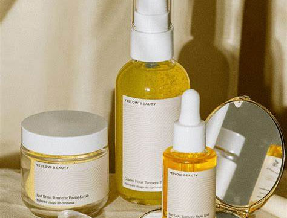

About
Sunshine is a small company which produces products for a fresh face. Founded in 2017 in hopes of helping those improve their skin care routine and achieve their skin goals they never thought possible. Sunshine is here for you, we are here to help you achieve your skin goals and boost your self confidence and serotonin. Find the benefits you need here from ingredients you’ll love.
New Products
Our newest product is our Hydrasun face cream. It is another step added in our skin care routine as it is to be used after our elixir to lock in moisture for the day and give a beautiful, clean and soft feel to your skin. It includes some amazing and very beneficial ingredients such as honey, turmeric, sea buckthorn, reishi mushroom and golden root. These ingredients are so beneficial for your skin because it includes anti aging properties and collagen boost. Furthermore it helps regulate many skin conditions for example with acne breakouts, eczema and many more, at the same time lessening the appearance of dark spots and acne scars. So what are you waiting for?
Key Ingredient - Honey

A key ingredient in many of our products is raw honey. Raw honey is beneficial because it regulates the balance of bacteria on your skin, therefore it is a great element for controlling acne. It’s anti acne property is very important benefit for so many people struggling with acne and self esteem issues because of it. Furthermore it helps to heal your skin from any damages as it has a property which speeds up the skin cells healing process.